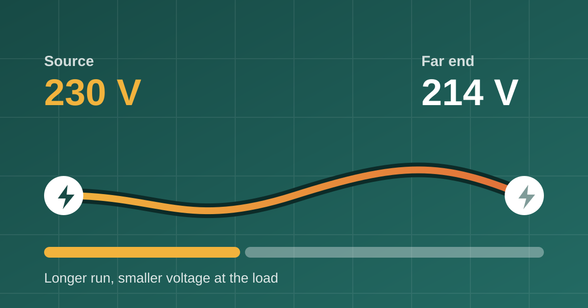

What size cable for a 7.4 kW home EV charger?
A 7.4 kW home charger draws 32 A for hours. For a short run clipped to a wall that means 4 mm² copper; in an insulated wall or over 30 m it means 10 mm² or more.
Read article
Voltage drop is the voltage a cable loses between the board and the load, and on a long run it often decides the cable size. A cable can carry the current safely and still be too long: the usual limits are 3% for lighting and 5% for other circuits (IEC 60364-5-52), and past that lights dim, motors struggle and chargers fault out. Below you will find the formula, a table of maximum cable lengths by cable size, a worked example and four ways to fix a run that drops too much.
Every conductor has resistance, so a current flowing through it loses some voltage on the way. What arrives at the load is lower than what left the board. The loss grows with current and length and shrinks as the cross-section gets bigger. It is also a loss in a literal sense: the missing volts turn into heat in the cable.
For copper cables the standard gives:
ΔU = b × (ρ₁ × L / S × cos φ + λ × L × sin φ) × IB
The percentage is ΔU divided by the nominal voltage (for three-phase, the phase-to-neutral voltage).
IEC 60364-5-52 Table G.52.1 recommends at most 3% for lighting and 5% for other uses when the installation is fed from a public low-voltage network. With a private supply the figures are 6% and 8%. National rules can be stricter, so check the ones that apply to you.
This table shows the maximum cable length, meaning the longest one-way run, for a single-phase 230 V, 16 A load at cos φ = 0.95 on copper cable, calculated with the formula above.
| Cable size | Max length at 3% (lighting) | Max length at 5% (other) |
|---|---|---|
| 1.5 mm² | 15 m | 25 m |
| 2.5 mm² | 25 m | 42 m |
| 4 mm² | 40 m | 67 m |
| 6 mm² | 60 m | 100 m |
| 10 mm² | 100 m | 166 m |
| 16 mm² | 158 m | 264 m |
A 2.5 mm² cable is fine for 16 A as far as current goes in many installation methods, yet it only reaches about 25 m before it breaks a 3% limit at that load. The table is for 16 A: halve the current and the length doubles, because the drop is proportional to both.
A 230 V single-phase circuit carries 16 A over 30 m of 2.5 mm² copper at cos φ = 0.95:
ΔU = 2 × (0.0225 × 30 / 2.5 × 0.95 + 0.00008 × 30 × 0.31) × 16 ≈ 8.2 V, or 3.6% of 230 V.
That fails a 3% limit. Moving up to 4 mm² gives ΔU ≈ 5.2 V (2.2%), which passes.
A cable has to pass all of these, and the largest result wins:
This article is a guide, not a design. Check the standard, the cable maker's data and your national wiring rules, and remember the installer remains responsible for the design.
You can try the numbers above in the free voltage drop calculator, which also shows the smallest cable size that fits your limit. Long runs are most common for chargers, heaters and outbuildings, so there are ready-made pages for an EV charger cable size, a sauna heater cable size and a heat pump cable size, and a general cable size calculator. Cable Calc puts the whole chain in one place on Android: derating, breaker selection, voltage drop and cable size, with every intermediate value on screen so you can check the working. It runs offline and covers copper cables from 1.5 to 120 mm².
Every conductor has resistance, so a current flowing through it loses some voltage on the way. What arrives at the load is lower than what left the board. The loss grows with current and length and shrinks as the cross-section gets bigger.
The usual limits are 3% for lighting and 5% for other circuits (IEC 60364-5-52).
Yes. A cable can carry the current safely and still lose too much voltage over a long run, so on long runs voltage drop often decides the cable size.
A 7.4 kW home charger draws 32 A for hours. For a short run clipped to a wall that means 4 mm² copper; in an insulated wall or over 30 m it means 10 mm² or more.
Read articleThe breaker protects the cable, not the other way round. Pick a breaker at or above the load but never above what the cable can carry.
Read article50/30/20 gives you three buckets: needs, wants and savings. It does not tell you what to do on a Tuesday. Here is how to turn the wants share into a daily limit.
Read articlePublished: . More in Electrical & cables or all articles.